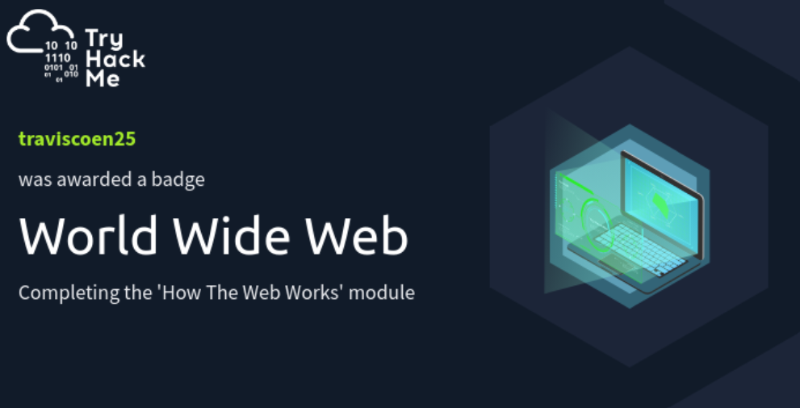

Explanation: Knowing how to write structured programs using Python, apply object-oriented programming and file handling is important because it improves my ability to think logically. For someone aspiring to become a Solutions Architect, understanding how applications are built at a foundational level is very important for making design decisions, communicating with developers and assessing technical solutions.
Although I am confident in my ability to use Python in small projects, I currenlty lack experience in larger projects and testing frameworks. All of which are essential in the industry.
Context: I have developed this skill through university coursework and guided practice. I have used it to design and implement a menu-driven application for selecting and purchasing bus ticket top-ups.
Evidence: Python Coursework project (NTU) - use of classes, CSV parsing, error handling and modular structure. Coursework
Explanation: Designed software using classes and objects and functions to improve structure. This is important because it supports scalable system design. Understanding OOP allows me to understand how larger systems are structured which is essential for Solution Architects.
My current experience with OOP is very limited and is used with simple class structure. I realise that in real-world systems require more complex design patterns. Therefore I plan to keep improving my OOP experience during my studies.
Context: I developed this in my university coursework and using my prior experience in Java concepts. Created Category and TopUp classes with constructors and accessor methods.
Evidence: Python Coursework project (NTU) Coursework
Explanation: Built a responsive frontend website for a real manufacturing company. This is important because it helps me to understand how frontend systems work and business requirements which allows me to design solutions that are usable and aligned with the user’s needs.
This project has greatly improved my frontend development skills, however my experience is still limited. I do not have much experience in backend systems, APIs and security. These are crucial for designing full-stack systems.
Context: This was developed through independent learning combined with practical project work. I designed and built a React-based frontend website for a manufacturing company.
Evidence: Frontend website project
Explanation: Identifying issues and developing logical and structured solutions. Problem solving is an important skill because technical roles require the ability to analyse problems and find effective solutions.
Context: I developed this skill by debugging code, handling errors and responding to simulated incidents. I have used it in error handling in Python and analysing security scenarios.
Evidence: Coursework
Explanation: Translated business requirements into technical concepts and clear outcomes. This is important for a Solutions Architect as they must explain technical concepts to both technical and non-technical stakeholders.
A Solutions Architect requires strong communication skills otherwise there could be a misalignment between business requirements and technical solutions. This could lead to terrible design decisions.
Context: I developed this skill by working with a real business to understand their requirements. I then converted their business needs into a functional website.
Evidence: Frontend website project
Explanation: Taking responsibility to learn outside of formal education. This is an important skill as technology evolves rapidly and continuous development is very important for careers in tech. This skill shows my ability to build knowledge independently and adapt to new tools.
Context: I developed this skill by completing CPD alongside academic studies. I used TryHackMe learning pathways and Forage job simulations./p>
Evidence: TryHackMe Pre-Security

Explanation: Planning and completing tasks within deadlines. Time management is very important because the delivery of technical work depends on meeting deadlines and managing priorities. This skill supports reliability and professionalism.
Context: I developed this skill by balancing coursework, independent projects and doing continuous development. I have completed university projects and coursework on time while also doing external learning.
Evidence: Submission of coursework, Coursework
Explanation: This virtual experience is relevant because it provided me with an introduction in how cyber security incidents are handled in a real organisation. This programme focused on understanding, communicating and responding to distributed denial-of-service (DDoS) attack. This helped me understand how security incident can affect systems and businesses.
Context: This experience supports my goal of becoming a Solutions Architect by helping me understand the importance of designing secure systems. This programme emphasises the need for clear communication between technical teams and stakeholders. All of which are important for a Solutions Architect.
Evidence: View Telstra Cybersecurity Virtual Experience Certificate (PDF)
Explanation: The TryHackMe Pre-Security course introduced me to foundational cyber security concepts, including networking basics, common vulnerabilities and security awareness. Although I did not complete the full paid pathway, I completed the free modules it provided which gave me practical exposure to cyber principles.
Context: This course supports my goal of becoming a Solutions Architect by improving my understanding of how systems can be designed with a security mindset. Even at foundation level, knowledge in cyber is very important to design secure and scalable systems.
Evidence: